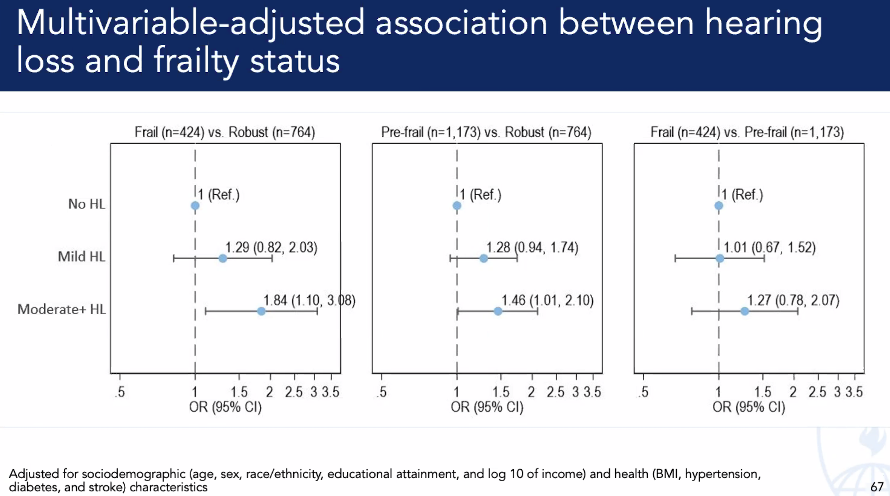

Aging#
Energy#
From the point of view of form, the
archetypeof all the arts is the art of the musician.-Oscar Wilde 4
1. Sensory
\
2. Memory -> 4. Frailty -> 5. Omics -> 6. Independence
/
3. Agility

When does aging begin?. From the ii-V7-i theme of a character arc, What variations might we perceive here? What departure-struggle-return? For our protagonist it is (ii) metabolism \(f(t)\), age \(S(t)\), energy \(h(t)\), encoded as (V7) frailty \((X'X)^T \cdot X'Y\), decoded as (i) determinism \(\beta\) vs. freewill \(SV_t'\). As a part of cosmic dirt, we departed from lifeless forms & manifested that with life & the energy of youth ii. But there’s a steady loss of energy from conception to death & the entirety of life is a losing battle against our return to cosmic dust V7. It is predetermined that we all complete the arc from dust-to-dust i. Lookout for the sentinal evidence from our sensory acuity (vision, olfaction, audition, gustation, chemistry, balance), cognitive state (memory, learning, updating) and motor agility (calories/day, m/s, dynamometer, bone-density, reflex-speed, falls, gymnastic-feats, vertigo). These encode all the insults that time & comorbidity bring upon the body, into a latent-space of the physical frailty phenotype, which may be decoded using -omics, and ultimately GRIP with predictive accuracy for loss of independence in activities of daily living.#
\(\mu\) Base-case#
\(f(t)\) Senses: Note that A4-A6 is normal range for human speech
Show code cell source
import numpy as np
import matplotlib.pyplot as plt
# Parameters
sample_rate = 44100 # Hz
duration = 20.0 # seconds
A4_freq = 440.0 # Hz
# Time array
t = np.linspace(0, duration, int(sample_rate * duration), endpoint=False)
# Fundamental frequency (A4)
signal = np.sin(2 * np.pi * A4_freq * t)
# Adding overtones (harmonics)
harmonics = [2, 3, 4, 5, 6, 7, 8, 9] # First few harmonics
amplitudes = [0.5, 0.25, 0.15, 0.1, 0.05, 0.03, 0.01, 0.005] # Amplitudes for each harmonic
for i, harmonic in enumerate(harmonics):
signal += amplitudes[i] * np.sin(2 * np.pi * A4_freq * harmonic * t)
# Perform FFT (Fast Fourier Transform)
N = len(signal)
yf = np.fft.fft(signal)
xf = np.fft.fftfreq(N, 1 / sample_rate)
# Plot the frequency spectrum
plt.figure(figsize=(12, 6))
plt.plot(xf[:N//2], 2.0/N * np.abs(yf[:N//2]), color='navy', lw=1.5)
# Aesthetics improvements
plt.title('Simulated Frequency Spectrum of A440 on a Grand Piano', fontsize=16, weight='bold')
plt.xlabel('Frequency (Hz)', fontsize=14)
plt.ylabel('Amplitude', fontsize=14)
plt.xlim(0, 4186) # Limit to the highest frequency on a piano (C8)
plt.ylim(0, None)
# Shading the region for normal speaking range (approximately 85 Hz to 255 Hz)
plt.axvspan(500, 2000, color='lightpink', alpha=0.5)
# Annotate the shaded region
plt.annotate('Normal Speaking Range (500 Hz - 2000 Hz)',
xy=(2000, 0.7), xycoords='data',
xytext=(2500, 0.5), textcoords='data',
arrowprops=dict(facecolor='black', arrowstyle="->"),
fontsize=12, color='black')
# Remove top and right spines
plt.gca().spines['top'].set_visible(False)
plt.gca().spines['right'].set_visible(False)
# Customize ticks
plt.xticks(fontsize=12)
plt.yticks(fontsize=12)
# Light grid
plt.grid(color='grey', linestyle=':', linewidth=0.5)
# Show the plot
plt.tight_layout()
plt.show()
Show code cell output

\(S(t)\) Memory: What quick tests are out there?
\(h(t)\) Emotions: Let’s focus on how they translate to motion!
\(\sigma\) Varcov-matrix#
\((X'X)^T \cdot X'Y\): Frailty: Energy, Omics, Activity, Muscle, Strength, Pace,
Show code cell source
import matplotlib.pyplot as plt
import numpy as np
# Clock settings; f(t) random disturbances making "paradise lost"
clock_face_radius = 1.0
number_of_ticks = 7
tick_labels = [
"Root-iADL (i)",
"Hunter-gather (ii7♭5)", "Peasant (III)", "Farmer (iv)", "Manufacturer (V7♭9♯9♭13)",
"Energy (VI)", "Transport (VII)"
]
# Calculate the angles for each tick (in radians)
angles = np.linspace(0, 2 * np.pi, number_of_ticks, endpoint=False)
# Inverting the order to make it counterclockwise
angles = angles[::-1]
# Create figure and axis
fig, ax = plt.subplots(figsize=(8, 8))
ax.set_xlim(-1.2, 1.2)
ax.set_ylim(-1.2, 1.2)
ax.set_aspect('equal')
# Draw the clock face
clock_face = plt.Circle((0, 0), clock_face_radius, color='lightgrey', fill=True)
ax.add_patch(clock_face)
# Draw the ticks and labels
for angle, label in zip(angles, tick_labels):
x = clock_face_radius * np.cos(angle)
y = clock_face_radius * np.sin(angle)
# Draw the tick
ax.plot([0, x], [0, y], color='black')
# Positioning the labels slightly outside the clock face
label_x = 1.1 * clock_face_radius * np.cos(angle)
label_y = 1.1 * clock_face_radius * np.sin(angle)
# Adjusting label alignment based on its position
ha = 'center'
va = 'center'
if np.cos(angle) > 0:
ha = 'left'
elif np.cos(angle) < 0:
ha = 'right'
if np.sin(angle) > 0:
va = 'bottom'
elif np.sin(angle) < 0:
va = 'top'
ax.text(label_x, label_y, label, horizontalalignment=ha, verticalalignment=va, fontsize=10)
# Remove axes
ax.axis('off')
# Show the plot
plt.show()
Show code cell output

\(\%\) Precision#
\(\beta\) Omics: No isolated one should be of great significance
Show code cell source
import matplotlib.pyplot as plt
import numpy as np
# Clock settings; f(t) random disturbances making "paradise lost"
clock_face_radius = 1.0
number_of_ticks = 9
tick_labels = [
"Sun-Genomics", "Chlorophyll-Transcriptomics", "Flora-Proteomics", "Animals-Metabolomics",
"Wood-Epigenomics", "Coal-Lipidomics", "Hydrocarbons-Glycomics", "Renewable-Metagenomics", "Nuclear-Phenomics"
]
# Calculate the angles for each tick (in radians)
angles = np.linspace(0, 2 * np.pi, number_of_ticks, endpoint=False)
# Inverting the order to make it counterclockwise
angles = angles[::-1]
# Create figure and axis
fig, ax = plt.subplots(figsize=(8, 8))
ax.set_xlim(-1.2, 1.2)
ax.set_ylim(-1.2, 1.2)
ax.set_aspect('equal')
# Draw the clock face
clock_face = plt.Circle((0, 0), clock_face_radius, color='lightgrey', fill=True)
ax.add_patch(clock_face)
# Draw the ticks and labels
for angle, label in zip(angles, tick_labels):
x = clock_face_radius * np.cos(angle)
y = clock_face_radius * np.sin(angle)
# Draw the tick
ax.plot([0, x], [0, y], color='black')
# Positioning the labels slightly outside the clock face
label_x = 1.1 * clock_face_radius * np.cos(angle)
label_y = 1.1 * clock_face_radius * np.sin(angle)
# Adjusting label alignment based on its position
ha = 'center'
va = 'center'
if np.cos(angle) > 0:
ha = 'left'
elif np.cos(angle) < 0:
ha = 'right'
if np.sin(angle) > 0:
va = 'bottom'
elif np.sin(angle) < 0:
va = 'top'
ax.text(label_x, label_y, label, horizontalalignment=ha, verticalalignment=va, fontsize=10)
# Remove axes
ax.axis('off')
# Show the plot
plt.show()
Show code cell output

\(SV_t'\) Independence: modal-interchange-nondiminishing. The modes here include the -omics & so much more
Show code cell source
import numpy as np
import matplotlib.pyplot as plt
# Define the total utility function U(Q)
def total_utility(Q):
return 100 * np.log(Q + 1) # Logarithmic utility function for illustration
# Define the marginal utility function MU(Q)
def marginal_utility(Q):
return 100 / (Q + 1) # Derivative of the total utility function
# Generate data
Q = np.linspace(1, 100, 500) # Quantity range from 1 to 100
U = total_utility(Q)
MU = marginal_utility(Q)
# Plotting
plt.figure(figsize=(14, 7))
# Plot Total Utility
plt.subplot(1, 2, 1)
plt.plot(Q, U, label=r'Total Utility $U(Q) = 100 \log(Q + 1)$', color='blue')
plt.title('Total Utility')
plt.xlabel('Quantity (Q)')
plt.ylabel('Total Utility (U)')
plt.legend()
plt.grid(True)
# Plot Marginal Utility
plt.subplot(1, 2, 2)
plt.plot(Q, MU, label=r'Marginal Utility $MU(Q) = \frac{dU(Q)}{dQ} = \frac{100}{Q + 1}$', color='red')
plt.title('Marginal Utility')
plt.xlabel('Quantity (Q)')
plt.ylabel('Marginal Utility (MU)')
plt.legend()
plt.grid(True)
# Adding some calculus notation and Greek symbols
plt.figtext(0.5, 0.02, r"$MU(Q) = \frac{dU(Q)}{dQ} = \lim_{\Delta Q \to 0} \frac{U(Q + \Delta Q) - U(Q)}{\Delta Q}$", ha="center", fontsize=12)
plt.tight_layout()
plt.show()
Show code cell output

1. Exposure
\
2. Role -> 4. Categorical.Imperative -> 5. Determinism -> 6. Freewill
/
3. Impulse

{kind=link}
Activity Counts. While association isn’t causation, there is a strong one between hearing acuity & physical activity. Investiage “arousal” across all senses external & internal to see impact on DNA-HAT-E.Box-mRNA-Wide-Associations#
Show code cell source
import matplotlib.pyplot as plt
import numpy as np
# Stages of life (x-axis)
stages_of_life = [
'Conceptus', 'Morula', 'Bilaminar Disk', 'Embryo', 'Fetus',
'Birth', 'Childhood', 'Adolescence', 'Adulthood', '100 Years'
]
# Approximate rate of cell-division or growth (y-axis)
growth_rate = [
100, 90, 85, 75, 60, 30, 20, 10, 5, 2
]
# Recreate the plot with the specified style
plt.figure(figsize=(12, 6))
plt.plot(stages_of_life, growth_rate, marker='o', linestyle='-', color='blue')
# Remove upper and right borders
ax = plt.gca()
ax.spines['top'].set_visible(False)
ax.spines['right'].set_visible(False)
# Add labels and title
plt.xlabel('Stage of Life')
plt.ylabel('Rate of Cell-Division/Growth')
plt.title('Rate of Cell-Division/Growth from Conceptus to 100 Years')
# Annotate the stages
for i, txt in enumerate(growth_rate):
plt.annotate(txt, (stages_of_life[i], growth_rate[i]), textcoords="offset points", xytext=(0,10), ha='center')
# Add a very light dotted grid
plt.grid(True, which='both', linestyle=':', linewidth=0.5)
plt.show()